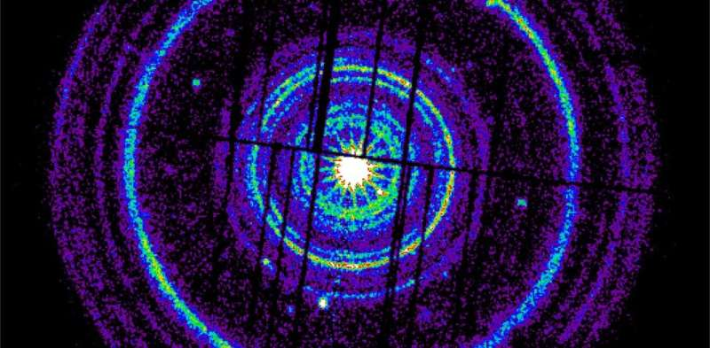

Shpërthimi më i ndritshëm kozmik i të gjitha kohërave
Në mënyrë tipike, ato janë rezultat i lindjes kataklizmike të një vrime të zezë në një galaktikë të largët. Një mënyrë se si kjo mund të ndodhë është përmes kolapsit të një ylli të vetëm, masiv. Astronomët si unë që punoj në terren janë të vetëdijshëm për shkallët masive të energjisë të përfshira në GRB. Ne e dimë se ato mund të lëshojnë aq energji në rrezet gama sa Dielli gjatë gjithë jetës së tij. Por herë pas here, vërehet një ngjarje që ende na jep pauzë. Në tetor 2022, detektorët e rrezeve gama në satelitët orbitalë Fermi dhe Observatori Neil Gehrels Swift vunë re një shpërthim të njohur si GRB 221009A (data e zbulimit). Kjo shpejt doli të ishte një rekord-vendës. Ajo u quajt më e ndritura e të gjitha kohërave, ose "Varka", si një stenografi e përshtatshme midis astronomëve që studionin dhe vëzhgonin ngjarjen. Jo vetëm që Anija filloi me shkëlqim, por nuk pranoi të zbehej si breshëri të tjera. Ne ende nuk e dimë plotësisht pse shpërthimi ishte kaq jashtëzakonisht i ndritshëm, por studimi ynë i ri, i botuar në Science Advances, jep një përgjigje për qëndrueshmërinë e tij kokëfortë. Shpërthimi filloi nga një distancë prej 2.4 miliardë vite dritë - relativisht afër për një GRB. Por edhe kur llogaritet distanca relative, energjia e ngjarjes dhe rrezatimi i prodhuar nga pasojat e saj ishin jashtë grafikëve. Është padyshim jo normale që një ngjarje kozmike e largët të depozitojë rreth një gigavat fuqi në atmosferën e sipërme të Tokës. Vëzhgimi i avionëve të ngushtë kozmikë të gazit GRB të tilla si Boat lëshojnë një rrymë gazi që lëviz me shpejtësi shumë afër dritës në hapësirë. Se si lëshohet saktësisht avioni mbetet diçka si një enigmë - por ka shumë të ngjarë, ai përfshin fusha magnetike pranë vendit ku po formohet vrima e zezë. Është emetimi i hershëm nga ky avion që ne e shohim si shpërthim. Më vonë, avioni ngadalësohet dhe prodhon rrezatim shtesë, një shkëlqim të mëvonshëm të dritës - nga valët e radios deri në (në raste të jashtëzakonshme) rrezet gama.